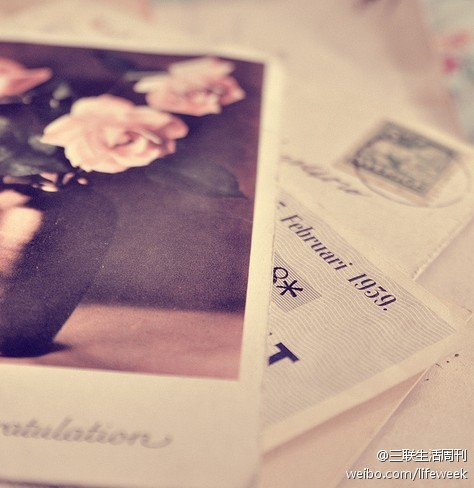

刚看了“思科九年”，主人公因为在自己的赢单中没有采用老板的老板所倾向的代理，面临下课。对比着看基层员工和高管的言论，很有意思呵。@林正刚企业运营:职业经理人的忠诚应该是对公司而不是对个人，任何管理者要求对他个人忠诚而不是公司的话，这可能内部山头主义的开始，企业内耗就跟着提升，这个时候，CEO就要检查自己做了什么会让这种环境出现:)
见多被中国教育洗脑的例子，一说起计划，格局都大得不得了，动辙世界，未来什么的，可是身边的点滴需要改进的地方却看不到。遇到这类人，我往往不耐烦。不过，昨晚与#我们的开源项目#志愿摄影@大胃哥 回家路上聊天，发觉自己苛刻了，以后要多鼓励无知无畏的精神。
假冒名人名言的更多，辟谣都辟不过来。 //@刘江CE:为什么这种狗屁不通的所谓名人名言在微博里这么吃香？思考中。@三联生活周刊:“把旧的翻新，回到它们中去。万事万物都没有变，而是我们在变。”—— 梭罗 早安。 
Mark //@CHANGE交换商店:每周六在交换商店门前的小巷子“微跳蚤市场”，欢迎大家带闲置物品来，可以跟其他人交换也可以自由买卖。无需报名、注册、申请，来就行了。@J_R工作室:【闲置物品处理全攻略】贵重物品去@宝瑞通典当行官博 、奢侈品去@寺库中国 、古董收藏品邮票钱币去@潘家园网 、体积大的可上@赶集网 ，二手服装捐给@brandnu 自己有空你就来#微跳蚤市场#练摊， 如果这些你都不想去！CHANGE交换商店欢迎你！
传播正能量。 //@可儿Mei: 一定要转前几天我的iphone也丢了自己根本就不报一丝生还的希望，朋友得知后给我的机子打了一个电话，对方应答：＂你告诉她不要着急，我刚捡到机子等了十几分钟没见失主，我现在办点事马上回到原地...好人真的有！ 好人好报！一生平安！[爱心传递]---:该账号因被投诉违反法律法规和《微博社区公约》的相关规定，现已无法查看。查看帮助 网页链接
缺乏善意的任何聪明和抖机智，都很招人厌，再装B, 简直是招人恨。 //@imlifang:編劇同學了得，ACM這密碼大約對到了不少選手心裡鳥 @周成祖 @fiona_duan @我的丁丁_小老虎 @Liang_Ye @刘江CE @Ada李力@panjf1987:调戏《非你莫属》的帖子就是看得爽啊~~//【非你莫属之交大CS - 饮水思源】 网页链接


 网页链接
网页链接